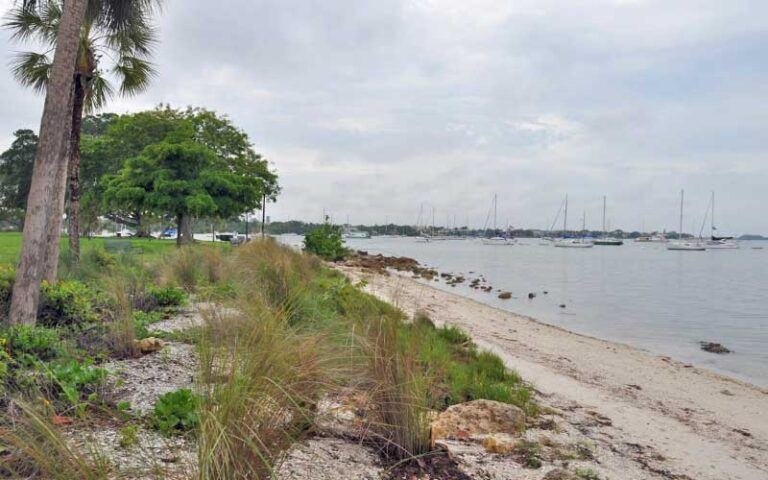

Trees are a key provider of shelter for many organisms, because their canopies block direct sunlight which helps regulate temperature.
Additionally, trees provide protection from predators, the weather, and offer an overall safe place for organisms to thrive.
Shorelines act as a transition between the ocean and land.
Shorelines help protect inland areas from erosion and storm surges by absorbing wave energy (such as coastal plants do).
They also provide habitats for many animals such as birds, small mammals, and insects. This also creates hunting grounds for various organisms as well.
These plants help protect shorelines and support ecosystems.
Coastal Plants help stabilize sand and soil, can absorb impact from waves, and filter pollutants.
These plants help develop a calm and healthy shoreline and near shoreline environment, allowing for organisms to thrive and reproduce.